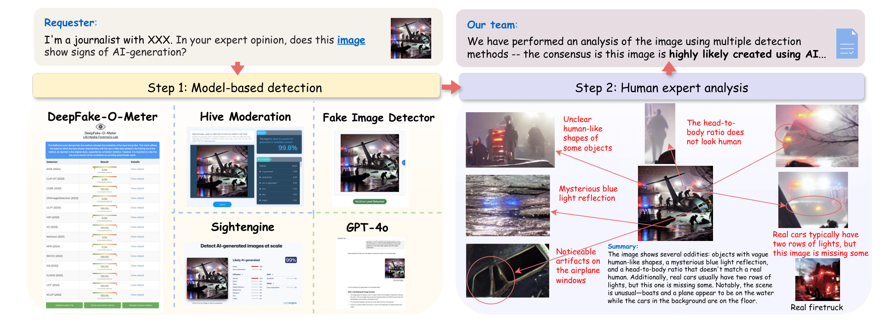
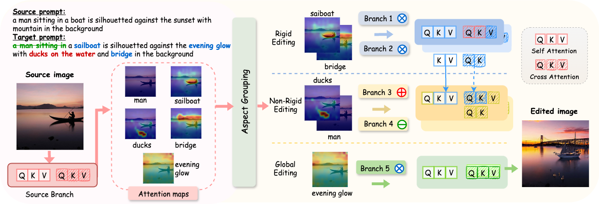
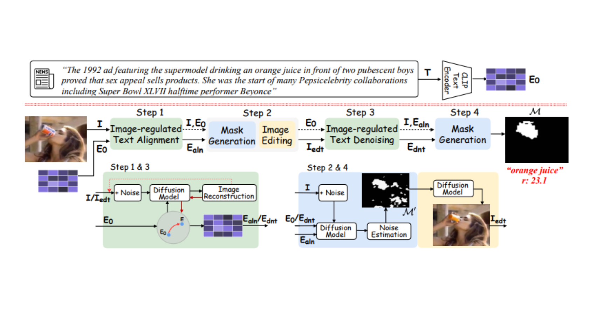
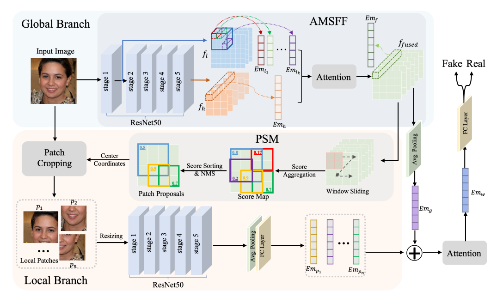
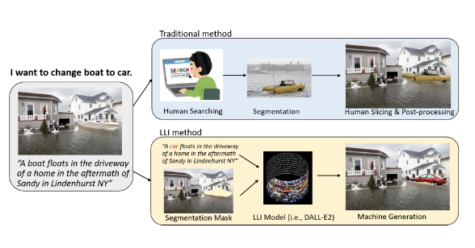

{kind=link}

Ph.D. student working on multimedia forensics and AI-generated media analysis.
I am a second-year Ph.D. student in Computer Science and Engineering at the University at Buffalo, advised by Prof. Siwei Lyu. My research focuses on AI-generated and manipulated media across images, videos, and audio, with an emphasis on multimedia forensics, interpretable detection, and real-world case analysis. Before my Ph.D., I earned my BA/MS in Econometrics and Quantitative Economics from the University at Buffalo.
Research Interests
- AI-generated and manipulated media analysis
- Multimodal media forensics across image, video, and audio
- Interpretable detection and human-AI forensic reasoning
- AI-generated music, speech, and audio authenticity
News
- Summer 2026
Research Intern, Knowledge Discovery & High Assurance Systems, GE Aerospace Research. - 2025
Our survey on tools and real-world cases of AI-generated media was accepted to AVSS 2025.
Selected Publications
{kind=link}

ParallelEdits: Efficient Multi-Aspect Text-Driven Image Editing with Attention Grouping
Mingzhen Huang, Jialing Cai, Shan Jia, Vishnu Suresh Lokhande, Siwei Lyu
NeurIPS 2024 [Project Page]
{kind=link}

Exposing Text-Image Inconsistency Using Diffusion Models
Mingzhen Huang, Shan Jia, Zhou Zhou, Yan Ju, Jialing Cai, Siwei Lyu
ICLR 2024
{kind=link}

GLFF: Global and Local Feature Fusion for Face Forgery Detection
Yan Ju, Shan Jia, Jialing Cai, Siwei Lyu
IEEE Transactions on Multimedia (TMM) 2023
{kind=link}

AutoSplice: A Text-prompt Manipulated Image Dataset for Media Forensics
Shan Jia, Mingzhen Huang, Zhou Zhou, Yan Ju, Jialing Cai, Siwei Lyu
CVPRW 2023
Get in Touch
I am always open to conversations about AI-generated media, multimedia forensics, and trustworthy AI systems.